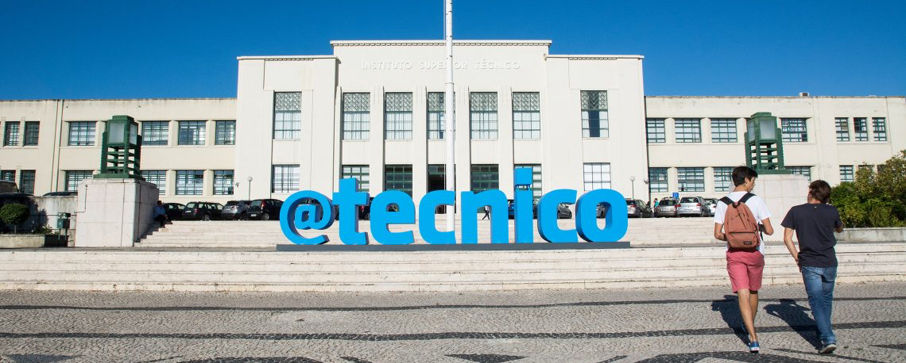

Lisbon Unit for Learning and Intelligent Systems
We are pleased to announce the creation of the Lisbon Unit for Learning and Intelligent Systems (LUMLIS), a unit of the
European Laboratory for Learning and Intelligent Systems (ELLIS), hosted at the Instituto Superior Técnico (IST) of the University of Lisbon (UL).

Overview
Instituto Superior Técnico (IST) is the leading engineering school in Portugal, part of the University of Lisbon. The Lisbon Unit for Learning and Intelligent Systems was established as a new ELLIS unit, with a two-fold mission aligned with the principles and goals described in the ELLIS open letter:- Boosting collaborative research and higher education in artificial intelligence (AI) and machine learning (ML) in Portugal and Europe;
- Empowering AI researchers to become active agents in maximizing the social and economic impacts of ML&AI in Europe and the world.
Vision
The vision of LUMLIS is to become the leading AI&ML research unit in Portugal and one of the top centers in Europe. LUMLIS aims at contributing actively to defining and executing the European AI strategy in the next decade, fostering the rapid development of AI technologies and promoting their use for addressing societal challenges and maximizing economic impact.The research agenda of LUMLIS will bring together researchers from different AI&ML sub-fields with the common goal of designing human-interacting explainable AI systems: this involves a strong bet on human language technologies, social and cognitive robotics, and computational biology, well supported on the development of efficient and reliable ML systems with theoretical guarantees.
The unit will exploit synergies between these areas towards the unified goal of designing AI systems that interact seamlessly with humans, learning from them and for them. To this end, LUMLIS will aggregate researchers who are all faculty members at IST and affiliated with non-profit research centers associated with IST: Instituto de Engenharia de Sistemas e Computadores (INESC-ID), Instituto de Telecomunicações (IT), and Instituto de Sistemas e Robótica (ISR-Lisboa).
Organisational Structure
The organizational structure of LUMLIS is currently as follows:- Head of LUMLIS: Mário Figueiredo (IST and IT).
- Executive Committee: Arlindo Oliveira (IST and INESC-ID), André Martins (IST and IT), Ana Paiva (IST and INESC-ID), José Santos-Victor (IST and ISR-Lisboa).
- Natural Language Processing: André Martins, Isabel Trancoso, Alberto Abad, Bruno Martins
- Machine Learning and Optimization: Mário Figueiredo
- Reinforcement Learning & Robotics: Ana Paiva, Manuel Lopes
- Computer Vision & Cognitive Robotics: José Santos-Victor, Alexandre Bernardino
- Networks and Infrastructure: Rodrigo Rodrigues
- Computational Biology: Arlindo Oliveira, Susana Vinga, Rui Henriques
Events
The members of LUMLIS are actively involved in a number of seminar series and reading groups, within IST and and within the non-profit research centers to which they are affiliated (e.g., a LUMLIS reading group at INESC-ID). Some of the recent and/or key events are listed next, while past events are listed on a separate page.